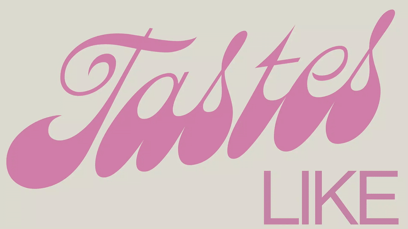
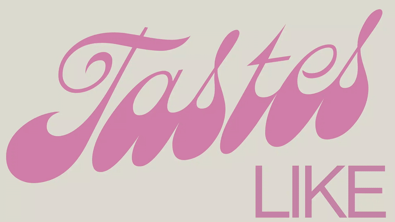
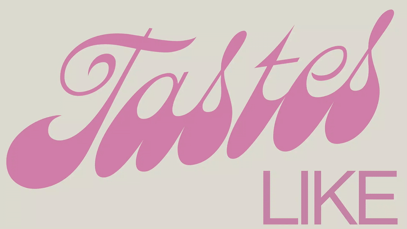

select work

slash - a writing system
(.)--Oo(.)][
consisting of a deconstructed latin alphabet, repetition of certain symbols
cgi - videogame disc design
SODACAN - experimental typeface
random tuesday project
random song/mix i made at my old apartment somtime in the summer of 2023? with an accompanying visualizer recorded on a 360 camera. i still refuse to learn how to make music by any other way but trial and error. in this one i learned to keep time.
date
📦
title
category
- O - [ - - - - - - - - - - - - - - - - - - - ] - O -
04/10/2023
sodacan.otf
ok
typography
00/00/0000
syd
broken hearts club
art & design
03/03/2024
cgi videogame cover
and packaging
3D design
& packaging
0/0/0

personal digital art
art